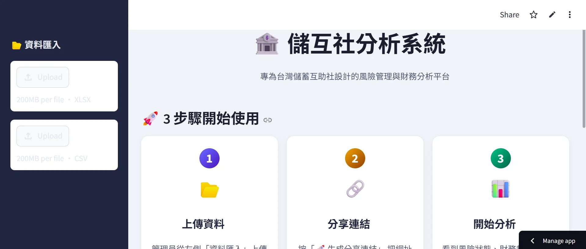
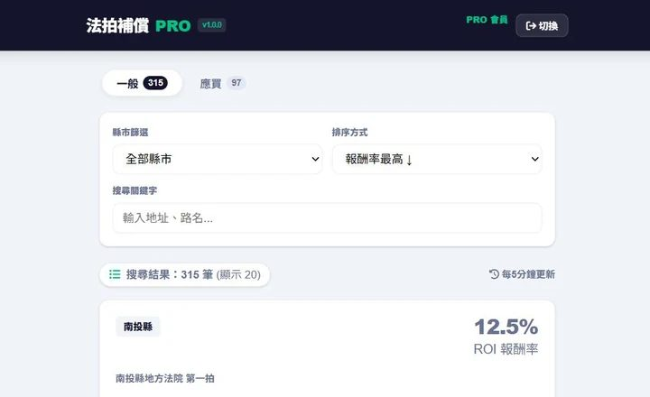
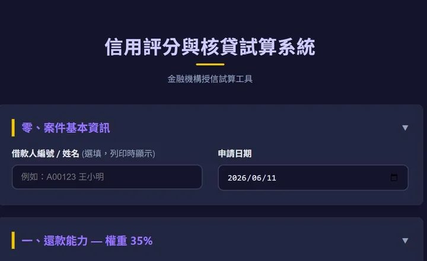
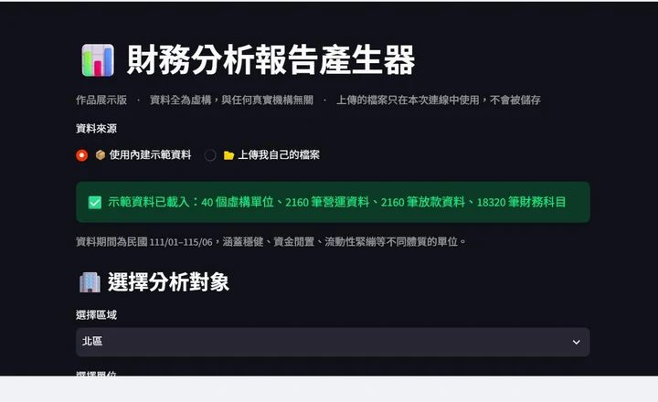
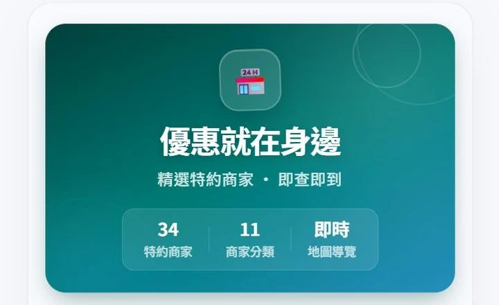
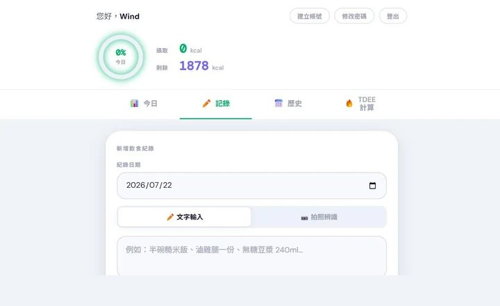
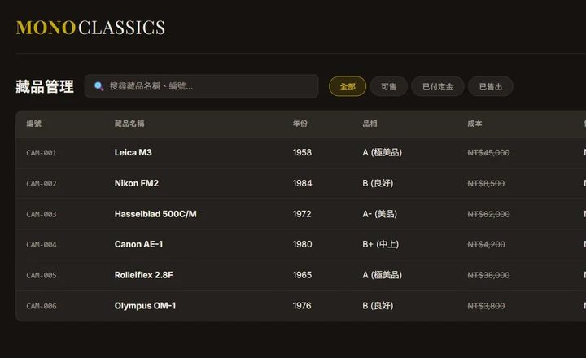
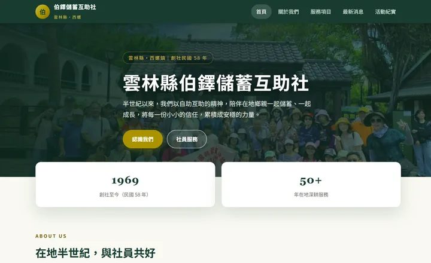
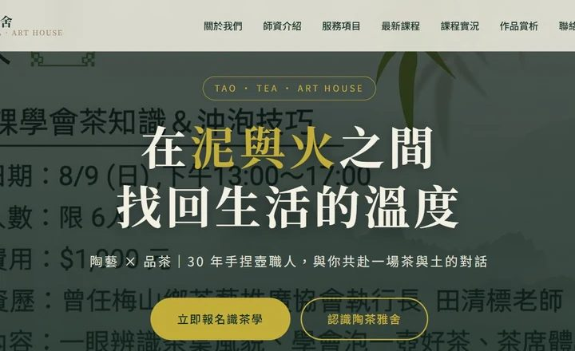

有需求，就能交付
可上線的成品
我是 Wind。從金融風控儀表板、20 萬會員 LINE AI 生態、全台法拍試算到品牌電商——靠 AI Agent 快速進入陌生領域，不同產業的案子我都能接下來做完，而且用你聽得懂的話跟你討論。
↓ 往下看作品我能做什麼
從零到一，從一頁式網站到跨系統整合
客製系統與工作流
把重複繁瑣的工作交給程式與排程，打造專屬內部系統與數位工作流。
形象網站
品牌故事、服務內容、聯絡動線一次收斂，手機開起來一樣好看。
電商系統
商品、金物流、訂單後台一起做，串 7-11 賣貨便或既有金流都可以。
互動工具
試算機、評分器、報表產生器——把你腦中那套規則變成別人也能用的工具。
LINE / App
LINE 官方帳號、LIFF、PWA，讓客戶不用安裝就能用。
AI 整合
把 LLM 接進你的資料與流程，不是接個聊天框就算數。
後台系統
庫存、訂單、房況、權限分級，讓不懂技術的同事也敢自己操作。
資料視覺化
把散在各處的數字，變成主管一眼看得懂的儀表板。
自動化腳本
每個月都要重做一次的事，交給排程去跑，你只收結果。
作品實績
標「已上線運作」的每天都有人在用，其餘為可實際操作的系統架構展示與核心引擎——涵蓋金融風控、不動產科技、LINE AI、電商與地方產業。
LINE AI 互助經濟網絡系統
服務 300+ 商家 × 20 萬會員：串接 Gemini LLM 與 Pinecone 向量資料庫，實現毫秒級規章問答、即時商務媒合與智慧推播。

儲蓄互助社風險監控儀表板
專為金融合作機構打造：自動偵測逾期與流動性風險，整合跨機構同業比較、熱區矩陣與資產趨勢追蹤，助管理層秒懂合規體質。

全台法拍公告即時監控與 ROI 試算
每 5 分鐘同步全台法院法拍公告，精算 300+ 筆在管標的投資報酬率、點交風險與資金成本並自動排序，省去 85% 人工查榜時間。

放款信用評分與審查報告產生器
依據還款能力、擔保品、信用等四維加權評分（35/25/20/10），輸入案由即自動計算信用額度並生成符合金融法規之送審報告。
體驗評分系統
AI 企業財務體質分析報告系統
上傳損益與資產負債兩份報表，演算法自動評定穩健／緊繃等五種體質，即時生成可視化圖表與高階主管專用分析報告。
查看 Live Demo野溪溫泉民宿官網與房況訂房系統
尖石溫泉民宿全套解決方案：前台形象與線上即時訂房（防重複下單/夜衝特惠），業主後台支援房價日曆、庫存調度與訂單管理。
訪問線上系統
跨平台特約商店 App (PWA)
離線可用的 PWA 架構：地圖即時找店、數位會員身分驗證，商家推薦經幹部與超管兩級審核，零安裝成本即開即用。
體驗 PWA App
FitLog AI 智慧飲食熱量分析 App
拍照即自動辨識餐點估算熱量與三大營養素，動態連動個人 TDEE 額度扣抵，飲食歷程雲端同步，讓健康管理零負擔。
體驗 AI App
古董相機商三合一營運系統
專門店營運後台：藏品庫存、POS 結帳櫃台與規格對比三大模組共用同一套資料架構，打造高單價選品店的數位中樞。
查看系統展示LiveHub 16 路多畫面無延遲直播監看
十六路直播畫面同屏播放、音訊自選獨立通道，支援 2×2 到 4×4 格局無縫切換，免裝軟體或硬體分割器即能瀏覽。
查看監控介面
果醬女孩無添加果醬品牌電商官網
職人果醬品牌電商：季節限定商品、得獎故事與訂購動線一站完成，串接 7-11 賣貨便金物流，轉換率與品牌力兼備。
訪問品牌官網
眉序開運修眉高轉換預約單頁官網
開運修眉單頁高轉換行銷網頁：活動限時倒數、名師介紹、服務價目表到 LINE 預約流程一頁收斂，支援後台即時更新。
訪問預約官網我不是那種一開口就講框架的工程師。
來找我的人，常常手裡捧著一件很具體的麻煩——一份每月都要重做的報表、一套只有老員工還記得怎麼用的流程、或一個放在心裡很久、卻被好幾家用「聽不懂你的行業」「做不出你要的樣子」退回的想法。
那些別人看不見、卻讓你每天多撐兩小時的重量，常常就是一件麻煩真正的樣子。
我做的事很單純：把那件麻煩聽懂，再做成一個你打開就會用、而且會想留下來的東西。
我把 AI Agent 放進每一個開發環節，所以我能比別人更快摸熟你的行業、更快交出可上線的成品——同樣的東西，別人還在跟你對規格書，我已經做出第一版讓你實際點、實際改。
舉例來說，法拍與不動產科技——一個我原本完全陌生的領域——我從讀拍賣公告規則開始，做出每 5 分鐘同步全台法院、自動精算 ROI 與點交風險的監控系統。
金融這一塊反過來是我的本業：十多年內控與稽核的底子，讓我在風控、授信、法遵、治理都能直接用你們的業務語言對話，不必先花三個月解釋名詞。
你花錢買的是成品，不是工時。我把 AI 帶來的效率，換成你能更早看到成果、更早修正方向。
合作是怎麼進行的
你不用先寫好規格書，講得出「哪裡卡住」就可以開始。
先聊 30 分鐘
用 LINE 講你的麻煩：哪一段最花時間、誰在做、做錯會怎樣。不用先想清楚要什麼系統。
做出第一版
我先交一個可以點、可以改的成品，不是簡報也不是規格書——讓你直接看到方向對不對。
你實際用、當場改
拿你的真實資料與流程跑一遍。方向錯，在這一步轉最便宜；細節不順，當場調。
上線 + 長期配合
原始碼與資產 100% 完整交付歸你；交付上線後不會消失，後續維護、迭代與新需求都能長期配合。可開發票、可簽約。
為什麼選我
六大優勢，讓你放心把專案交給我
AI Agent 加速交付
用 AI Agent 協助開發，交付更快、修正更即時，成果更貼近你的實際作業。
技術棧不受限
你選工具，我負責交付。不綁定特定框架，選最適合你的方案。
白話溝通
不賣弄技術名詞，用你聽得懂的方式解釋方案與進度。
快速進入陌生產業
11+ 個產業的案子多數是從零摸熟你的作業流程再動手，你不用先找到「做過你這行的工程師」。
可開發票、可簽約
正式合作有保障，大型專案可分期，權益白紙黑字寫清楚。
穩定長期配合
不會接了就消失，後續維護、迭代、新需求都能長期配合。
有需求，先聊聊就好
不用先想清楚規格，也不用先準備預算表。講得出「哪裡卡住」，我就能告訴你這件事值不值得做、大概怎麼做。
通常 24 小時內回覆・可開發票、可簽約・大型專案可分期